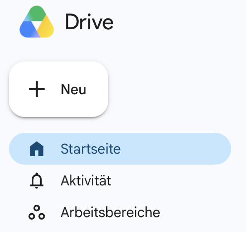
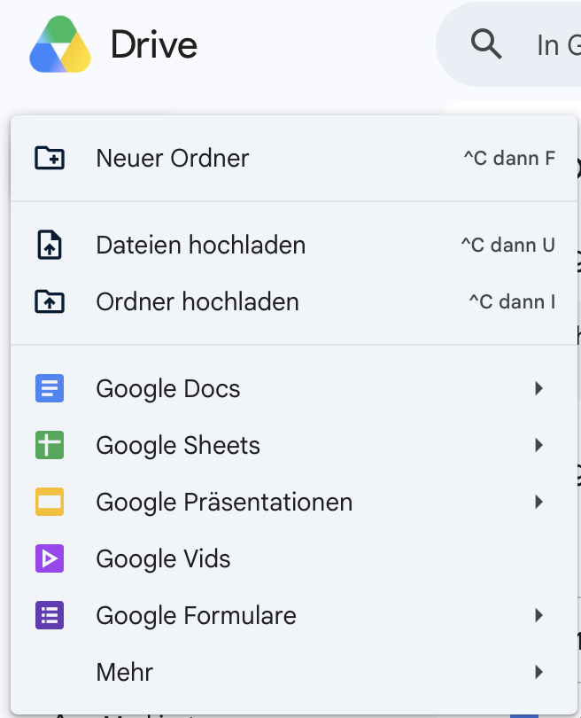
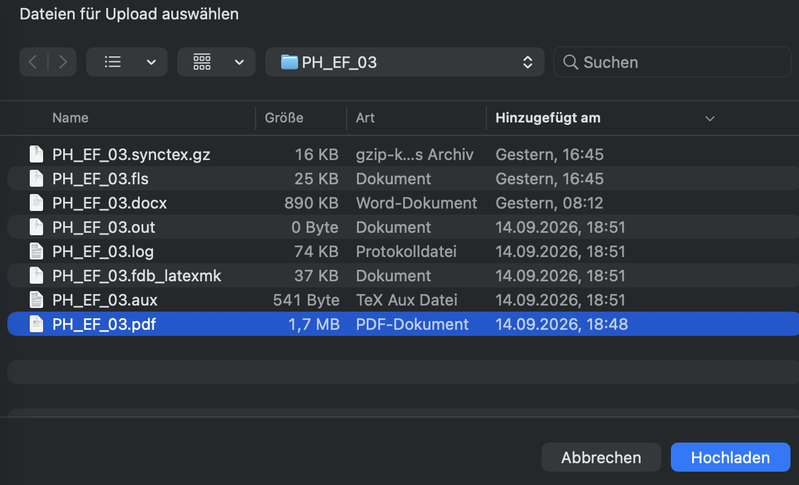

Google Drive
Eine Datei hochladen
Speichere eine Datei von deinem Computer in Google Drive.
Google Drive ist wie ein Ordner im Internet. Dort kannst du Dateien aufbewahren und später wiederfinden. Zum Hochladen brauchst du eine Internetverbindung und ein Google-Konto.
So geht’s
Google Drive öffnen
Öffne drive.google.com in deinem Internetprogramm. Melde dich mit deinem Google-Konto an, wenn du dazu aufgefordert wirst.
Auf „Neu“ klicken
Suche links oben die Schaltfläche Neu und klicke darauf.

Die Schaltfläche „Neu“ findest du links oben. „Dateien hochladen“ auswählen
Ein Menü öffnet sich. Wähle Dateien hochladen aus.

Wähle im Menü „Dateien hochladen“. Datei aussuchen
Suche die Datei auf deinem Computer und klicke sie an. Bestätige dann mit Öffnen oder Hochladen. Der Name der Schaltfläche kann je nach Computer anders sein.

Hier ist eine PDF-Datei ausgewählt. Mit „Hochladen“ geht es weiter. Warten und prüfen
Warte, bis das Hochladen fertig ist. Du findest die Datei nun in Google Drive.